측량및지형공간정보기사 (2014-05-25 기출문제)
1과목: 측지학 및 위성측위시스템
1. 탄성파 측정에 대한 설명 중 틀린 것은?
- 굴절법은 지표면으로부터 낮은 곳을 대상으로 한다.
- 반사법은 지표면으로부터 깊은 곳을 대상으로 한다.
- 외핵과 내핵의 경계를 알아내기 위하여 반사법을 이용한다.
- 단층과 같은 지실 구조는 탄성파 측량에 의해 알아낼 수 있다.
(정답률: 88%)

2. 수준측량에 대한 설명으로 옳지 않은 것은?
- 우리나라 수준망은 인하공업전문대학 구내에 설치된 수준원점을 근간으로 구성되어 있다.
- 우리나라 수준망은 전국을 포함하는 다수의 수준환으로 구성되어 있다.
- 우리나라 1등 수준점간 평균거리는 약 4km, 2등 수준점간 평균거리는 약 2km이다.
- 바다의 깊이는 평균최고고조면(MHHW)을 해안선은 평균최저저조면(MLLW)을 기준으로 한다.
(정답률: 88%)
3. 모호정수(cycle ambiguity)를 결정하여 고정해(fixing solution)를 산출하는 이유는?
- 측위정확도를 향상시킬 수 있기 때문이다.
- 대기효과를 제거할 수 있기 때문이다.
- 사이클슬립을 방지할 수 있기 때문이다.
- 수신기의 갑작스러운 이동을 막을 수 있기 때문이다.
(정답률: 77%)
4. 표고 336.42m의 평탄지에서 거리 450m를 평균해면상의 값으로 보정하려고 할 때 보정량은? (단, 지구반지름은 6,370km로 가정한다.)
- -2.38cm
- -2.56cm
- 1.28cm
- 3.28cm
(정답률: 71%)
5. 지심 좌표 방식으로 GPS 위성 측량에서 쓰이는 좌표계는?
- UTM좌표
- WGS84 좌표
- 천문 좌표
- 베셀 좌표
(정답률: 79%)
6. 중력측정 단위 중 1gal에 해당되는 것은?
- 1m/s2
- 1cm/s2
- 1kg/s2
- 1g/s2
(정답률: 77%)
7. GPS에 의한 2등 기준점 측량에서 한 Session의 관측시간은 최소 얼마 이상으로 해야 하는가?
- 1시간
- 4시간
- 8시간
- 24시간
(정답률: 72%)
8. GPS에 의한 기준점측량 작업 시의 기선해석에 대한 설명으로 옳지 않은 것은?
- 기선해석의 결과는 FLOAT해에 의한다.
- GPS위성의 궤도요소는 정밀력 또는 방송력에 의한다.
- 기선해석의 방법은 세션(session)마다 단일기선해석에 의한다.
- 사이클 슬립(cycle slip)의 편집은 원칙적으로 기선해석프로그램에 의하여 자동편집이나, 수동편집을 할 수 있다.
(정답률: 72%)
9. 구면삼각형 ABC의 3각을 관측한 결과 A= 50° 10′, B=66° 35′, C= 64° 15′ 이었다면 이 구면삼각형의 면적은? (단, 구의 반지름은 5m이다)
- 0.736m2
- 0.636m2
- 0.536m2
- 0.436m2
(정답률: 65%)
10. 지구 중심으로부터 각 관측점까지의 거리가 높이차만큼 서로 다르기 때문에 나타나는 중력의 차이를 보정하는 중력보정은?
- 위도 보정
- 부게 보정
- 프리 에어보정
- 지형 보정
(정답률: 49%)
11. GPS 위성 궤도력(ephemeris)에 대한 설명 중 옳은 것은?
- 정밀궤도력은 위성으로부터 실시간으로 수신할 수 있다.
- 국토지리정보원에서는 정밀궤도력을 생산한다.
- 정확한 위치결정을 위해서는 정밀궤도력을 사용한다.
- 방송궤도력에는 위성시계오차 보정항을 포함하고 있지 않다.
(정답률: 77%)
12. 지자기 측정의 3요소로 올바르게 짝지어진 것은?
- 편각, 복각, 수평분력
- 복각, 연직각, 수평분력
- 복각, 수평각, 연직분력
- 편각, 복각, 연직분력
(정답률: 89%)
13. 물리학적 측지학에 속하지 않는 것은?
- 탄성파 측정
- 지자기 측정
- 중력 측정
- 사진 측정
(정답률: 77%)
14. 다음 중 GPS측량을 실시할 때, 멀티패스(Multi path)현상의 영향이 가장 적은 곳은?
- 고층빌딩 사이
- 고압송전탑 밑
- 수풀이 우거진 숲속
- 비가 많이 내리는 폭이 넓은 하천가
(정답률: 75%)
15. GPS측량에 대한 설명으로 옳지 않은 것은?
- 기상의 영향을 받지 않는다.
- 동시에 3차원 측량을 할 수 있다.
- 신호 사용자에게 비용에 대한 부담이 있다.
- 지구상 어느 곳에서나 24시간 이용할 수 있다.
(정답률: 74%)
16. DGPS에 대한 설명으로 옳지 않은 것은?
- DGPS에서는 2개의 수신기에 관측된 자료를 사용한다.
- DGPS 측량은 실시간 위치결정이 불가능하다.
- 기선의 길이가 길수록 DGPS의 정확도는 낮다.
- 일반적으로 DGPS가 단독측위보다 정확하다.
(정답률: 74%)
17. GPS에 의한 위치결정 시 사용되는 위성 관측법은?
- 전파 관측법
- 카메라 관측법
- 음파 관측법
- 레이저 관측법
(정답률: 80%)
18. 천구 상에서 천정과 동점 및 서점을 잇는 대원으로 자오선과 천정에서 직각으로 교차하는 것은?
- 항정선(Loxodrome)
- 묘유선(Prime vertical)
- 측지선(Geodetic line)
- 평행권(Parallel line)
(정답률: 69%)
19. GPS 신호에 포함되어 있지 않은 것은?
- C/A 코드
- P 코드
- 방송궤도력
- 정밀궤도력
(정답률: 66%)
20. 우리나라 측량의 평면직각좌표원점 구성으로 옳은 것은?
- 동해원점, 동부원점, 서부원점, 서해원점
- 동해원점, 동부원점, 중부원점, 서부원점
- 동해원점, 동부원점, 중부원점, 서해원점
- 남부원점, 동부원점, 중부원점, 서부원점
(정답률: 80%)
2과목: 응용측량
21. 그림에서 A점의 표고가 40m 라면 B점의 표고는?
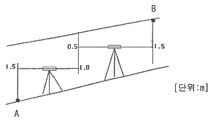
- 40.5m
- 43.5m
- 47.0m
- 47.5m
(정답률: 59%)
22. 캔트가 완화곡선의 길이에 직선적으로 비례하는 완화곡선은?
- 활권선
- 3차포물선
- 렘니스케이트
- 클로소이드
(정답률: 68%)
23. 다중빔음향측심기의 장비점검 및 보정시에 평탄한 해저에서 동일한 측심선을 따라 왕복측량을 실시하여 조사선의 좌측 및 우측의 기울기 차이로 발생하는 오차를 보정하는 것은?
- 롤보정
- 피치보정
- 헤딩보정
- 시간보정
(정답률: 56%)
24. 하천측량 시 평면측량에서 유제부(뚝이 있는 제방)의 측량 범위로 옳은 것은?
- 홍수가 영향을 주는 구역보다 약간 넓게 측량한다.
- 제외지의 전부와 제내지의 300m이내까지 측량한다.
- 홍수 시에 물이 흐르는 맨 옆에서 약 100m까지 측량한다.
- 하구에서부터 상류의 홍수피해가 미치는 지점까지 측량한다.
(정답률: 71%)
25. 그림과 같은 지역의 면적은?
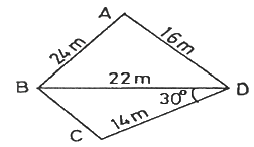
- 258.16m2
- 248.16m2
- 238.16m2
- 228.16m2
(정답률: 65%)
26. 넓은 지역의 정지나 매립과 같은 경우의 토공량 산정시 많이 이용하는 방법으로, 대상지역을 일정한 크기의 삼각형 또는 사각형으로 구분하여 각 꼭지점 지반고에서 계획고 사이의 높이차를 구하여 체적을 구하는 방법은?
- 양단면 평균법
- 중앙단면법
- 등고선법
- 점고법
(정답률: 65%)
27. 원곡선에 의한 종단곡선에서 반지름 3000m의 종단곡선을 설치할 경우 종단곡선 시점으로부터 수평거리 40m인 지점에서 경사선(접선)과 종단곡선 간의 수직거리(종거)는?
- 0.14m
- 0.27m
- 0.53m
- 0.58m
(정답률: 51%)
28. 반지름 267.90m, 교각 87° 15′ 56″ 인 단곡선의 중앙종거는?
- 72.00m
- 73.00m
- 74.00m
- 75.00m
(정답률: 59%)
29. 그림과 같이 약 200m의 하천이 있어서 p 및 Q에 레벨을 세우고 고호 수준측량을 하였다. A점으로부터 D점까지의 각 측점에서 전후 표척의 포고차가 각각 다음과 같을 때 D점의 표고는? (단, A점의 표고는 2.545m, A→B = -0.512m, 레벨 P에서 B→C = -0.229m, 레벨 Q에서 C→B = +0.267m, C→D = +0.636m)
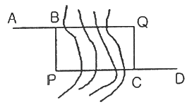
- 2.041m
- 2.411m
- 2.421m
- 2.431m
(정답률: 64%)
30. 3점법으로 하천의 평균유속을 구함에 있어서 수면에서 수심의 20%, 60%, 80% 깊이의 유속을 측정한 결과 0.56㎧, 0.49㎧, 0.36㎧ 일 때 평균유속은?
- 0.493㎧
- 0.475㎧
- 0.470㎧
- 0.443㎧
(정답률: 70%)
31. 단곡선을 설치하기 위하여 교각 I=80°, 외할 E=10m로 하려고 할 때 곡선길이(C.L.)는?
- 22.9m
- 25.1m
- 45.7m
- 50.3m
(정답률: 63%)
32. 일반적인 택지조성측량의 순서로 가장 적합한 것은?
- 사전조사 → 현황측량 → 확정측량 → 경계측량 → 택지조성공사 → 준공측량
- 사전조사 → 현황측량 → 택지조성공사 → 확정측량 → 경계측량 → 준공측량
- 사전조사 → 현황측량 → 준공측량 → 경계측량 → 택지조성공사 → 확정측량
- 사전조사 → 현황측량 → 경계측량 → 택지조성공사 → 확정측량 → 준공측량
(정답률: 60%)
33. 지하시설물에 대한 탐사 간격은 20m 이하를 원칙으로 한다. 다만, 간격에 관계없이 반드시 측량하여야 하는 경우에 해당되지 않는 것은?
- 지하시설물이 분기하는 경우
- 지하시설물이 교차하는 경우
- 지하시설물이 직선구간인 경우
- 지하시설물에 각종 제어장치가 있는 경우
(정답률: 56%)
34. 도로의 중심선을 따라 20m 간격으로 종단 측량을 행한 결과가 표와 같다. 측정 No.1의 도로 계획고를 표고 21.50m로 하고 2%의 상향기울기의 도로를 설치하기 위한 No.5의 절취고는?
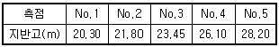
- 4.70m
- 5.10m
- 5.90m
- 6.10m
(정답률: 55%)
35. 터널측량에 대한 설명으로 옳지 않은 것은?
- 터널 외 측량, 터널 내 측량, 터널 내외 연결측량으로 구분할 수 있다.
- 터널 내 측량 시 조명이 달린 표척과 레벨이 필요하다.
- 터널 내 중심선 측량 시 도벨이라는 기준점을 설치한다.
- 터널 내의 곡선설치 시 주로 편각현장법을 사용한다.
(정답률: 68%)
36. 단면법에 의한 토량계산 방법으로 양단면의 면적차이가 클 경우 일반적으로 토량이 가장 많이 나오는 것은?
- 삼변법
- 중앙단면법
- 양단면평균법
- 각주 공식에 의한 방법
(정답률: 60%)
37. 그림과 같이 삼각형으로 나누어서 측량을 실시하였다. 시공 계획고를 50m로 할 때 남는 토량은?
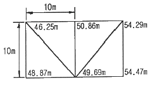
- 70.28m3
- 74.373
- 81.67m3
- 92.45m3
(정답률: 54%)
38. 보기의 터널측량 작업내용을 순서대로 열거한 것으로 가장 적합한 것은?
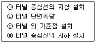
- ㉠-㉢-㉣-㉡
- ㉠-㉣-㉡-㉢
- ㉢-㉡-㉣-㉠
- ㉢-㉠-㉣-㉡
(정답률: 70%)
39. 교각 80°, 곡선반지름 300m, 노선의 시작점에서 교점까지의 추가거리가 310.30m일 때 시단현의 편각은? (단, 중심말뚝 간의 거리는 20m이다.)
- 0° 8′ 12″
- 0° 12′ 12″
- 1° 8′ 12″
- 1° 12′ 12″
(정답률: 65%)
40. 하천의 평면측량에서 수애선측량은 어떤 수위를 기준으로 하는가?
- 평수위
- 평균수위
- 최고수위
- 최저수위
(정답률: 69%)
3과목: 사진측량 및 원격탐사
41. 평탄지의 축척 1:20000 항공사진의 연직사진에 찍힌 직육면체 빌딩의 벽 상(上)변과 벽 하(下)변의 길이가 사진 상에서 각각 20.0mm와 19.8mm 이었다면 이빌딩의 높이는 약 얼마인가? (단. 항공 카메라의 초점거리는 15cm 이고, 상변과 하변의 실제 길이는 같다.)
- 15m
- 20m
- 25m
- 30m
(정답률: 35%)
42. 정사영상 제작을 위한 수치미분편위수정 과정에서 제거되는 오차가 아닌 것은?
- 영상의 내부표정 오차
- 영상의 센서 노이즈
- 지형의 기하학적 왜곡
- 센서 자세에 의한 왜곡
(정답률: 57%)
43. 색조(tone), 크기(size), 형태(shape), 음영(shadow), 질감(texture) 및 모형(pattern)에 의하여 사진의 정성(定性) 분석을 하는 작업은?
- 표정작업
- 사진지도 제작
- 사진판독
- 세부도화
(정답률: 58%)
44. 원격탐사(Reomte sensing)에 대한 설명으로 옳지 않은 것은?
- 자료가 대단히 많으며 불필요한 자료가 포함되는 경우가 있다.
- 물체의 반사 스펙트럼 특성을 이용하여 대상물의 정보 추출이 가능하다.
- 높은 고도에서 좁은 시야각에 의하여 촬영되므로 중심 투영에 가까운 영상이 촬영된다.
- 자료 취득 방법에 따라 수동적 센서에 의한 것과 능동적 센서에 의한 방법으로 분류할 수 있다.
(정답률: 72%)
45. 항공사진의 편위를 모두 수정하여 집성한 사진지도로써 지도와 동일한 위치관계를 가지고 있는 사진지도는?
- 약조정집성 사진지도
- 조정집성 사진지도
- 반조정집성 사진지도
- 정사투영 사진지도
(정답률: 34%)
46. 동서방향으로 10km, 남북방향으로 30km, 평균표고 500m인 지역을 해면으로부터 2000m 고도에서 초점거리 150mm, 사진크기 23cm × 23cm인 카메라로 촬영하기 위한 사진매수는? (단, 종중복도 70%, 횡중복도 30%로 하며, 촬영방향은 동서방향으로 한다.)
- 252매
- 266매
- 270매
- 285매
(정답률: 44%)
47. 촬영고도 4000m에서 초점거리 16cm의 광각카메라로 180km/h의 운항속도로 항공사진을 촬영하고자 한다. 필름 상에 허용흔들림량이 0.01mm라면 셔터스피드는 몇 초로 설정하여야 하는가? (단, 중복도는 60%, 사진크기는 23cm×23cm 이다.)
- 1/150
- 1/200
- 1/250
- 1/300
(정답률: 55%)
48. TIN(Triangular Irregular Network)에 대한 설명으로 틀린 것은?
- 어떠한 연속필드에도 적용할 수 있다.
- 측정한 점의 값은 보존되지 않는다.
- 델로니 삼각망(Delaunay triangulation)으로 분할한다.
- 수치표고모델(DTM : Digital Terrain Model)을 구성하는 방법 중 하나이다.
(정답률: 72%)
49. 사진기준점에 대한 설명으로서 옳은 것은?
- 연결점(pass point)은 인접모델간의 중복부분 중간에 위치하여야 한다.
- 연결점(pass point)과 결합점(tie point)은 별도로 선점해야 하며 동일점으로 해서는 안 된다.
- 연결점(pass point)은 엄밀하게 선점해야 하므로 디지털 항공사진의 경우에도 자동매칭에 의한 방법을 적용하지 않는다.
- 결합점(tie point)의 위치는 주점 부근이어야 한다.
(정답률: 36%)
50. 다음 중 레이다 위성영상을 적용하기 가장 어려운 활용분야는?
- 홍수피해 조사
- 해수면 파랑조사
- 수치표고델 작성
- 토지피복분류
(정답률: 52%)
51. 해석적 항공삼각측량 방법이 아닌 것은?
- 광속조정법
- 독립모형조정법
- 다항식조정법
- 멀티플렉스법
(정답률: 69%)
52. 사진측량에서의 모델(Model)에 대한 정의로 가장 알맞은 것은?
- 1쌍의 중복된 사진으로 입체시 되는 부분이다.
- 어느 지역을 대표할 만한 사진이다.
- 편위수정(編位修正)을 한 사진이다.
- 촬영된 1장의 사진이다.
(정답률: 68%)
53. 상호표정 요소를 해석적인 방법으로 구할 때 종시차 방정식의 관측값으로 필요한 자료는?
- 공액점의 y 좌표
- 공액점의 x 좌표
- 연직점의 z 좌표
- 연직점의 x 좌표
(정답률: 68%)
54. 초점거리 150mm인 항공사진기로 촬영경사 5 grad 각도로 평지를 촬영하였다. 사진의 등각점은 주점으로부터 최대경사선상 몇mm 인 곳에 위치하는가?
- 5.9mm
- 6.5mm
- 11.8mm
- 13.1mm
(정답률: 50%)
55. 원격탐사 플랫폼에서 지상물체의 특성을 탐지하고 기록하기 위해 이용하는 전자기복사에너지(Electromagnetic Radiation Energy) 중 파장이 긴것부터 짧은 것 순으로 옳게 나열된 것은?
- Visible blue - Visible red - Vidible Green
- Visible blue - Mid Infrared - Thermal Infrared
- Visible red - Vidible Green - Visible blue
- Visible red - Mid Infrared - Thermal Infrared
(정답률: 74%)
56. 어느 지역의 비고가 100m인 곳에서 촬영한 연직사진의 축척이 1:25000일 때, 이 사진의 비고에 의한 최대 변위량은?(단, 사진의 크기는 23cm × 23cm, 초점거리 210mm이다.)
- 0.15cm
- 0.31cm
- 0.43cm
- 0.71cm
(정답률: 55%)
57. 항공삼각측량에 대한 설명으로 가장 적합한 것은?
- 항공기에서 피사체에 전파를 보내어 측정하는 삼각측량
- 사진의 좌표를 지상측량의 삼각측량 원리에 의해 측정하는 것
- 항공사진 상의 사진좌표를 도화기 또는 정밀좌표 측정기로 측정한 다음 소수의 지상 기준점 성과를 이용하여 사진좌표를 지상좌표로 환산하는 방법
- 항공사진에 선정된 점의 평면좌표만을 측정하는 약식 측량법
(정답률: 63%)
58. 다음 중 입체도화기로 절대표정을 할 때 기준점 선점으로 가장 좋은 형태는?
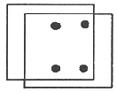
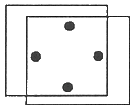
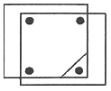
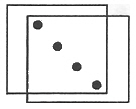
(정답률: 54%)
59. 공면조건을 이용하여 결정할 수 있는 표정은?
- 내부표정
- 상호표정
- 절대표정
- 접합표정
(정답률: 53%)
60. 감독분류 알고리즘 중 하나로 확률에 기초로 각 밴드내의 클래스에 대한 훈련자료 통계가 정규분포를 이룬다고 가정하고 영상을 분류하는 방법은?
- 최근린 분류(nearest-neighbor classifier)
- 최단거리 분류(minimum distance classifier)
- 최대우도 분류(maximum likelihood classifier)
- 거리가중 분류(distance weighted classifier)
(정답률: 56%)
4과목: 지리정보시스템
61. GIS 표준화에 대한 설명으로 옳지 않은 것은?
- SDTS는 GIS 표준 포맷의 대표적인 예이다.
- 경제적이고 효율적인 GIS 구축이 가능하다.
- 하나의 기관에서 구축한 데이터를 많은 기관들이 공유하여 사용할 수 있다.
- 하드웨어(H/W)나 소프트웨어(S/W)에 따라 이용 가능한 포맷을 달리한다.
(정답률: 69%)
62. 주거단지 적지선정 시 경사도와 향(aspect)은 매우 중요한 인자이다. 경사분류도와 향분류도를 이용하여 두 조건을 모두 만족하는 지역을 얻으려 할 때, 가장 적합한 방법은?
- intersection
- dissolve
- erase
- merge
(정답률: 59%)
63. 메타 데이터의 요소 중 데이터의 제목, 지리적 범위, 제작일 등을 나타내는 것은?
- 공간정보
- 품질정보
- 식별정보
- 속성정보
(정답률: 42%)
64. 다음 용어에 대한 설명 중 옳지 않은 것은?
- Clip : 원래 레이어에서 필요한 지역만을 추출해 내는 것이다.
- Erase : 레이어가 나타내는 지역 중 임의지역을 삭제한다.
- Split : 하나의 레이어를 여러 개의 레이어로 분할한다.
- Intersect : 여러 개의 레이어가 하나의 레이어로 합쳐지면서 도형정보와 속성정보가 합쳐진다.
(정답률: 63%)
65. 그림 6×6화소 크기의 레스터 데이터를 수치적으로 표현한 것이다. 이 데이터를 2×2화소 크기의 데이터로 영상재배열 하고자 한다. 미디언필터(Median Filter)를 이용하여 2×2화소 데이터의 수치값을 결정하고자 할 때 결과로 옳은 것은?
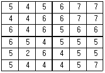
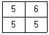
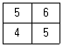
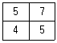
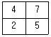
(정답률: 67%)
66. 도형자료 중 래스터(raster)형태의 특징으로 옳지 않은 것은?
- 격자의 크기 조절로 자료용량의 조절이 가능하다.
- 자료의 데이터구조가 매우 복잡하며, 자료생성이 어렵다.
- 다양한 공간적 편의가 격자 형태로 나타나며, 자료의 조작 과정이 용이하다.
- 래스터자료는 주로 네모난 형태를 가지기 때문에 벡터자료에 비해 미관상 매끄럽지 못하다.
(정답률: 59%)
67. 동일한 사상이나 위치를 나타내는 기준점을 이용하여 두 지도의 좌표체계가 일치하게 만드는 방법은?
- 내삽(interpoliation)
- 노드스냅(node snapping)
- 러버쉬팅(rubber sheeting)
- COGO(coordinate geometry)
(정답률: 48%)
68. 지리정보시스템의 자료구조 중 자료를 부호화하는데 있어서 간단한 자료구조를 가지고 있고 중첩에 대한 조작 및 분석이 용이하여 매우 효과적인 것은?
- 외부 데이터
- 내부 데이터
- 래스터 데이터
- 벡터 데이터
(정답률: 67%)
69. 벡터 기반의 GIS 자료처리에 포함되는 작업은?
- 히스토그램 평활화
- 방사보정
- 감독분류
- 버퍼링
(정답률: 56%)
70. 유비쿼터스(ubiquitous)의 정의로 옳은 것은?
- 시간과 장소에 구애받지 않고 언제 어디서나 원하는 정보에 접근할 수 있는 기술이나 환경
- 인공지능 컴퓨터와 로봇에 의하여 사람의 노동력이 최소화 될 수 있는 기술이나 환경
- 복지사회가 구현되어 사람들이 편안하고 행복하게 살 수 있도록 하는 이상적인 기술이나 환경
- GPS와 GIS를 결합하여 4차원 정보관리를 할 수 있는 기술이나 환경
(정답률: 75%)
71. 지리정보의 특성인 공간적 위상관계에 대한 설명으로 옳지 않은 것은?
- 인접성은 대상물의 주변에 존재하는 대상물과의 관계를 의한다.
- 연결성은 실제로 연결된 대상물들 사이의 관계를 의미한다.
- 근접성은 특정거리나 위치 밖에 존재하는 대상물들 사이의 관계를 의미한다.
- 공간적 위상광계의 특성을 바탕으로 조건에 만족하는 지역이나 조건을 검색 및 분석이 가능하다.
(정답률: 62%)
72. 공간데이터 모델은 기본적인 도형의 요소(geometric primitive type)로 공간 객체를 표현한다. 다음 중 국토지리정보원에서 제작한 수치지도 ver2.0에서 사용하는 기본적인 도형의 요소로 옳게 짝지어진 것은?
- 점
- 점, 선
- 선, 면
- 점, 선, 면
(정답률: 75%)
73. 관계형 DBMS와 비교할 때, 객체지향형 DBMS의 장점으로 옳지 않은 것은?
- 자료의 갱신이 용이
- 자료처리 속도의 현저한 향상
- 동질성을 가지고 구성된 실세계의 객체들을 비교적 정확히 묘사
- 강력한 자료 모델링 기능 부여
(정답률: 52%)
74. 데이터베이스 설계의 시작점인 개념적 데이터 모델링에서 가장 널리 이용하는 방법으로 객체-관계 모형(E-R model)이 있다. 다음 중에 E-R모델의 구성요소가 아닌 것은?
- 키(Key)
- 관계(relation)
- 속성(attributes)
- 개체(entity)
(정답률: 72%)
75. GIS의 자료구조에 대한 설명 중 틀린 것은?
- 점은 하나의 노드로 구성되어 있고, 노드의 위치는 좌표를 표현한다.
- 선은 2개의 노드와 수 개의 버텍스(Vertex)로 구성되어 있고, 노드 혹은 버텍스는 체인으로 연결된다.
- 면은 하나 이상의 노드와 수 개의 버텍스로 구성되어 있고, 노드 혹은 버텍스는 체인으로 연결된다.
- TIN은 연속적인 삼각면으로 지표면을 표현하는 것으로 각 삼각면의 중앙점에서 해당 지점의 고도값을 표현한다.
(정답률: 64%)
76. 이미 알고 있는 값을 이용하여 알려지지 않은 지점에 대한 속성값을 추정하는 Spline, Kriging 등의 방식을 무엇이라 하는가?
- 추이분석(trend)
- 내삽(interpolation)
- 외삽(extrapolation)
- 회귀분석(regression)
(정답률: 67%)
77. 다음 중 GIS 소프트웨어의 기본 기능 구성이 아닌 것은?
- 자료의 입력 및 검색
- 자료의 변환 및 출력
- 자료의 암호화 및 표준화
- 자료의 저장 및 데이터베이스 관리
(정답률: 65%)
78. 지리정보시스템(GIS)에서 지형의 상태를 나타내는 수치표고자료 형태로 맞지 않는 것은?
- DLG (Digital Line Graph)
- DEM (Digital Elevation Model)
- DSM (Digital Surface Model)
- DTM (Digital Terrain Model)
(정답률: 72%)
79. GIS 활용분야와 공간분석 기법이 어울리지 않게 연결된 것은?
- 최근경로 탐색 - 네트워크 분석
- 근접성 분석 - 히스토그램 분석
- 적지분석 - 중첩분석
- 경관분석 - 3차원 입체지형 생성
(정답률: 66%)
80. 경사분석에서의 경사를 경사각(°)과 경사를(%)로 표현할 때, 그림에 대한 경사로 옳은 것은?
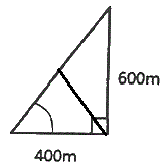
- 경사각 약 34〬 , 경사률 약 67%
- 경사각 약 34〬 , 경사률 약 150%
- 경사각 약 56〬 , 경사률 약 67%
- 경사각 약 56〬 , 경사률 약 150%
(정답률: 50%)
5과목: 측량학
81. 폐합트래버스측량의 결과 값이 아래 표와 같을 때 측선 CD의 배횡거는?
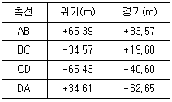
- 83.57m
- 115.90m
- 165.90m
- 186.82m
(정답률: 48%)
82. 다음 설명 중 옳지 않은 것은?
- 지성선은 토지기복이 되는 선으로 주로 산악에 있어서 요선, 철선, 경사변환점 등을 나타내는 선이다.
- 경사변환선이란 지성선이 방향을 바꾸어 다른 방향으로 향하는 점 또는 분기하거나 합하여 지는 점이다.
- 철선(능선)이란 지표면이 높은 곳의 꼭대기 점을 연결한 선이다.
- 요선(계곡선)은 지표면이 낮거나 움푹 패인 점을 연결한 선으로 합수선이라고도 한다.
(정답률: 40%)
83. 조정이 복잡하고 포괄면적이 적으며 시간이 많이 요구되는 단점이 있으나 정확도가 가장 높은 삼각망은?
- 단열 삼각망
- 유심 삼각망
- 결합 삼각망
- 사변형 삼각망
(정답률: 71%)
84. 지형의 표시방법 중 부호적 도법에 속하지 않은 것은?
- 음영법(shading system)
- 단채법(layer system)
- 점고법(spot system)
- 등고선법(contour system)
(정답률: 51%)
85. 연속적인 측량이 가능한 토털스테이션을 사용하여 등고선을 측정하는 방법에 대한 설명으로 옳지 않은 것은?
- 측점으로부터의 기계고를 측정한다.
- 프리즘의 높이는 임의로 하여 수시로 변경하는 것이 편리하다.
- 토털스테이션을 추적모드(tracking mode)로 설정하고 측정할 등고선 높이를 입력한다.
- 높이를 알고 있는 측점에 토털스테이션을 설치하거나, 기준점을 관측하여 측점의 높이를 결정한다.
(정답률: 68%)
86. 삼각측량에 의한 관측 결과가 그림과 같을 때, c점의 좌표는? (단, AB의 거리=10m, 좌표의 단위 : m)
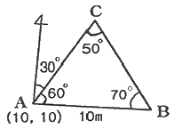
- (20.63, 17.13)
- (16.13, 20.63)
- (20.63, 16.13)
- (17.13, 16.13)
(정답률: 51%)
87. A점에서 B점을 연결하는 결함트래버스에서 XA점의 좌표가 = 69.30m, YA = 123.56m이고 B점의 좌표가 XB = 153.47m, YB = 636.22m 일 때 AB간 위거의 총합이 +84.30m, 경거의 총합이 +512.60m일 때 폐합오차는?
- 0.14m
- 0.24m
- 0.34m
- 0.44m
(정답률: 38%)
88. 축척 1:25000인 우린나라 지형도의 한 도엽의 크기(경도×위도)는?
- 1.25' × 1.25'
- 2.5' × 2.5'
- 7.5' × 7.5'
- 15.0' × 15.0'
(정답률: 58%)
89. 2점간의 거리를 측정한 결과가 다음과 같을 때 표준오차는?
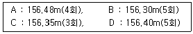
- 1.66cm
- 2.43cm
- 3.25cm
- 3.88cm
(정답률: 38%)
90. A점에서 B점까지 일정한 경사의 도로상에서 50m의 줄자를 이용하여 거리측량을 하였다. 관측값은 398.855m이고, 관측 중의 온도는 26°c, AB간의 고저차가 11.02m일 때, AB간의 수평거리는? (단, 줄자의 표준온도는 15°C, 줄자는 표준줄자(50m)보다 6.5mm짧고, 줄자의 팽창계수는 +0.000012°C 이다.)
- 398.594m
- 398.704m
- 398.794m
- 398.894m
(정답률: 31%)
91. 수준측량을 한 결과로부터 아래와 같은 값을 얻었다. 각, 측점의 계산된 표고 중 틀린 것은? (단, 측점 No.1의 표고는 10.000m이다.)
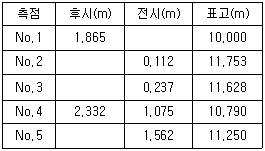
- No.2
- No.3
- No.4
- No.5
(정답률: 61%)
92. 거리측정에서 줄자로 1회 관측 시 오차가 0.03m 이라면 30m줄자로 270m를 측정하였을 때 오차는?
- 0.03m
- 0.09m
- 0.27m
- 0.30m
(정답률: 63%)
93. 후시(B.S)=1.67m, 전시(F.S)=1.32m 일 때 미지점이 310.50m의 지반고를 갖는다면 기지점의 지반고는?
- 309.18m
- 310.15m
- 311.35m
- 312.17m
(정답률: 58%)
94. 광파기(거리측정기)의 기계정수를 검사하기 위해 아래 그림과 같이 거리를 측정하였다. 기계정수 K를 구하는 방법은?
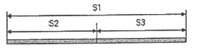
- K=S1-(S2+S3)
- K=(S1+S2+S3)/S1
- K=(S2+S3)/S1
- K=S1/(S2+S2)
(정답률: 58%)
95. 다음 중 기본측량성의 국외 반출에서 “외국정부와 기본측량성과를 서로 교환하는 등 대통령령으로 정하는 경우”에 해당되는 경우가 아닌 것은?
- 대한민국 정부와 외국 정부 간에 체결된 협정 또는 합의에 따라 기본측량성과를 상호 교환하는 경우
- 국제회의 또는 국제기구에 참석하는 자가 자료로 사용하기 위하여 측량용 사진을 반출하는 경우
- 관광객 유치와 관광시설 홍보를 목적으로 측량용 사진을 반출하는 경우
- 축척 5만분의 1 미만인 소축척 수치지형도를 국외로 반출하는 경우
(정답률: 70%)
96. 지형도에서 난외사항으로 기재되는 사항이 아닌 것은?
- 발행자
- 도엽번호
- 인접도엽표
- 지형 및 지물
(정답률: 55%)
97. 측량업의 등록취소 등의 관련 사항 중 1년 이내의 기간을 정하여 영업정지를 명할 수 있는 경우가 아니 것은?
- 과실로 인하여 측량을 부정확하게 한 경우
- 정당한 사유 없이 1년 이상 휴업한 경우
- 측량업 등록사항의 변경신고를 하지 아니한 경우
- 거짓이나 그 밖의 부정한 방법으로 측량업의 등록을 한 경우
(정답률: 50%)
98. 측량·수로조사 및 지적에 관한 법률에서 용어의 정의로 옳지 않은 것은?
- “일반측량”이란 공공측량외의 측량을 말한다.
- “측량기록”이란 측량성과를 얻을 때까지의 측량에 관한 작업의 기록을 말한다.
- “수로측량”이란 해양의 수심·지구자기(地球磁氣)·중력·지형·지질의 측량과 해안선 및 이에 딸린 토지의 측량을 말한다.
- “측량”이란 공간상에 존재하는 일정한 점들의 위치를 측정하고 그 특성을 조사하여 도면 및 수치로 표현하거나 도면상의 위치를 현지(現地)에 재현하는 것을 말하며, 측량용 사진의 촬영, 지도의 제작 및 각종 건설사업에서 요구하는 도면작성 등을 포함한다.
(정답률: 57%)
99. 일반측량을 시행하는데 기초로 할 수 없는 자료는?
- 기본측량성과
- 일반측량성과
- 공공측량성과
- 공공측량기록
(정답률: 43%)
100. 다음 기준점 중 국가기준점에 속하지 않는 것은?
- 위성기준점
- 통합기준점
- 지적기준점
- 수로기준점
(정답률: 42%)